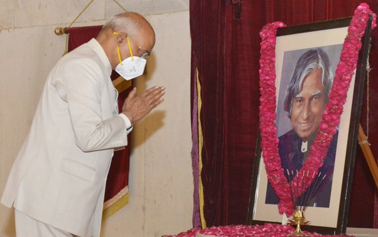

TRIBUTE TO A P J ABDULKALAM
"Failure will never overtake me if my determination to succeed is strong enough."-A.P.J. Abdul Kalam

Tribute by Nation:
Nation pays tribute to former President Dr. A P J Abdul Kalam on his birth anniversary. Dr Kalam is also known as the Missile Man of India. President Ram Nath Kovind ,Vice President M Venkaiah Naidu and Prime Minister Narendra Modi paid tribute to Dr Kalam.
Floral Tributes:
The President and officials of Rashtrapati Bhavan paid floral tributes in front of a portrait of Dr Kalam. Vice President M Venkaiah Naidu today paid tributes to former President, Dr A P J Abdul Kalam on his birth anniversary today. In a series of tweets, he said, Dr Kalam was an epitome of simplicity and knowledge. Vice President M Venkaiah Naidu said, he made invaluable contribution in strengthening India’s defence and space capabilities. Vice President said, Dr Kalam will always remain an inspiration to every Indian.
Tribute by PM Modi:
Prime Minister Narendra Modi paid tribute to Dr. APJ Abdul Kalam on the occasion of his Birth Anniversary today. In a tweet, PM Modi said, the country can never forget the indelible contributions of Dr. Kalam both as a President and a Scientist towards national development. He said, the life journey of Dr. Kalam gives strength to millions.
Tribute by Home Minister Amit Shah:
Home Minister Amit Shah remembered Bharat Ratna Dr. A.P.J. Abdul Kalam on his Birth Anniversary today. Born on 15th October 1931, Dr. Kalam was an aerospace scientist who served for nearly four decades in the DRDO and ISRO. Fondly remembered as Missile Man of India for his contribution towards development of ballistic missile technology in the country, Dr. Kalam also served as the President of the country from 2002 to 2007.